Não sabe como instalar o modpack? Clique aqui!
Baixe o modpack clicando no botão acima.
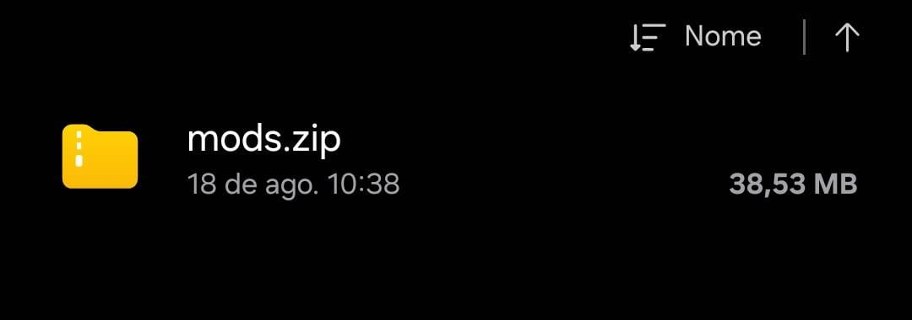
Extraia o arquivo ZIP
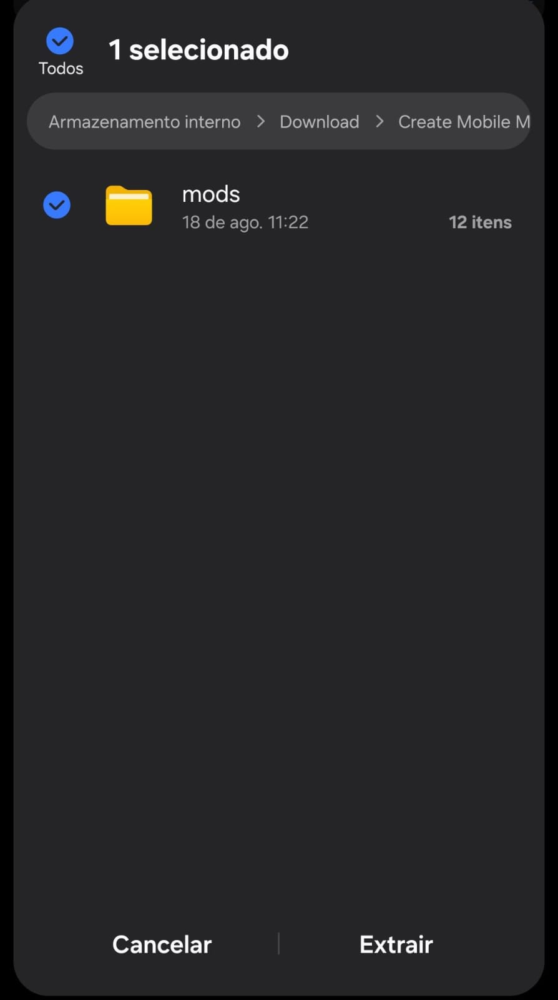
Abra o seu launcher mobile de preferência
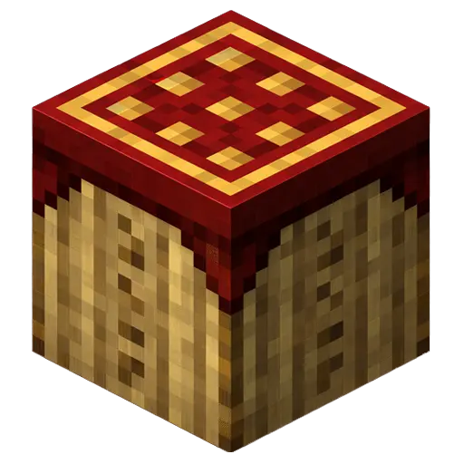
Selecione criar novo exemplo (instancia)
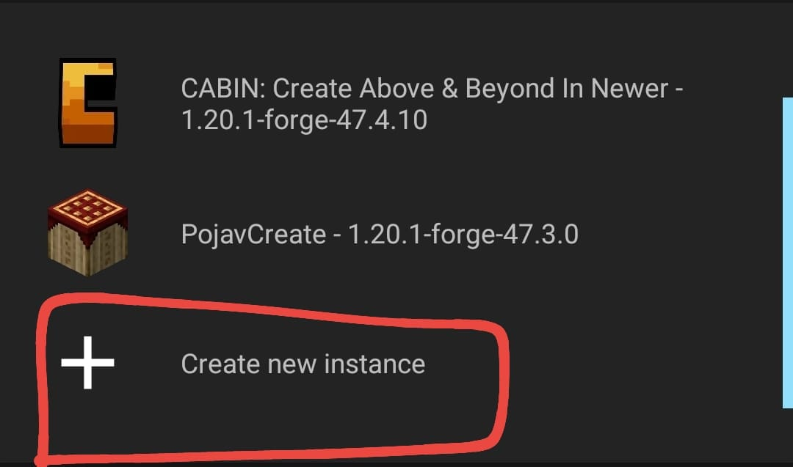
Selecione instancia Fabric
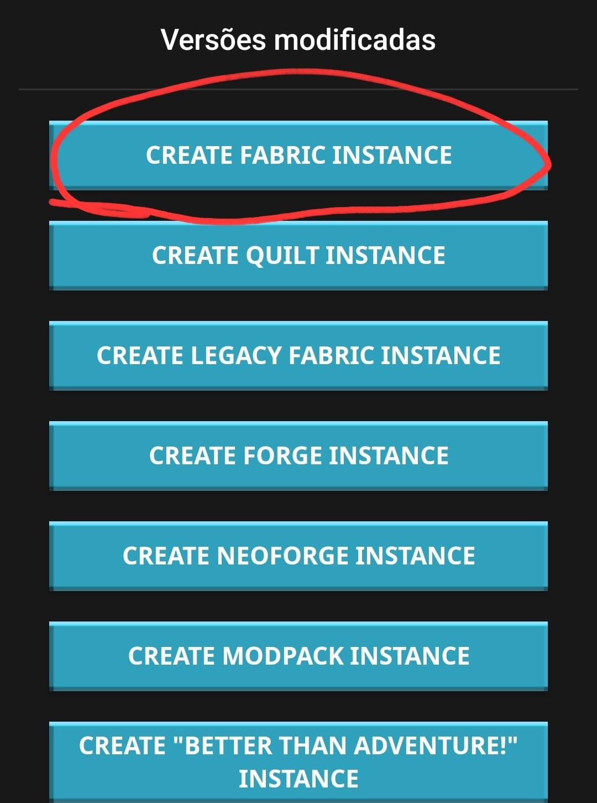
Use as exatas versões abaixo (jogo 1.20.1 e fabric 0.19.3 padrão)
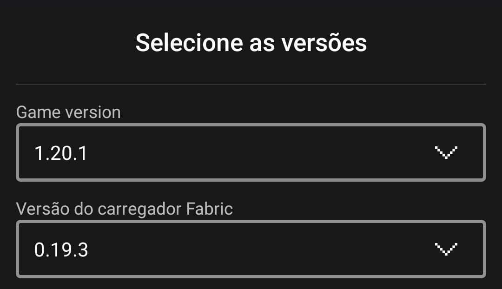
Salve a instancia, volte ao menu inicial e clique no icone do lápis
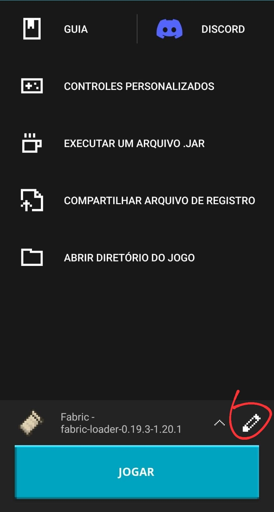
Clique em renderizador
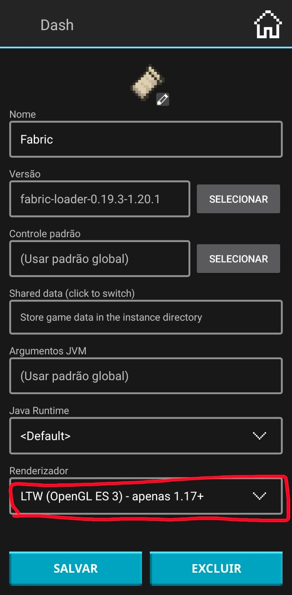
Escolha um dos três abaixo (Zink recomendado, freeadreno somente em aparelhos Snapdragon)
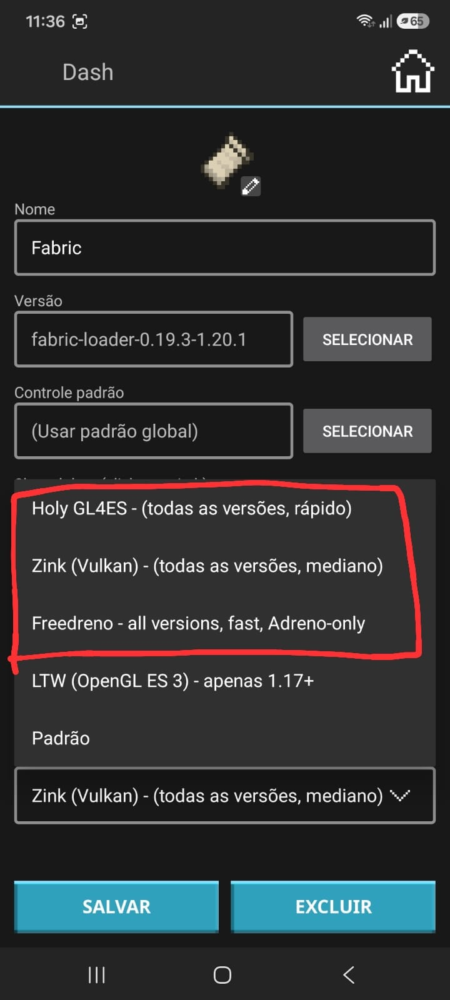
Salve e clique em jogar para carregar as pastas, pode sair do jogo assim que ver o menu
No menu inicial, com a instancia selecionada, abra o diretorio
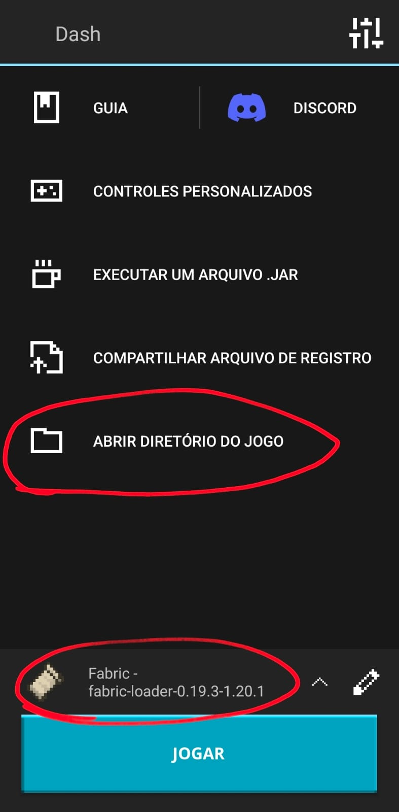
Abra a barra lateral
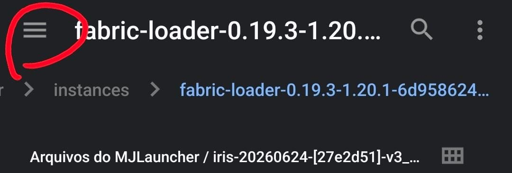
Vá até downloads (ou onde sua pasta mods estiver)
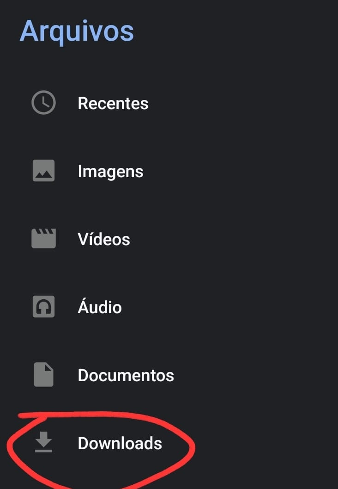
Selecione todos os mods e copie-os
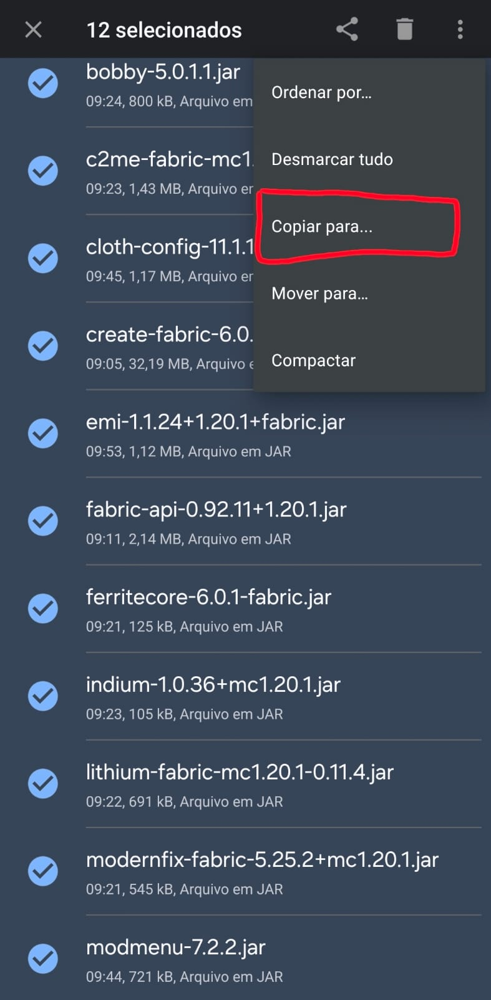
Procure o launcher na barra lateral
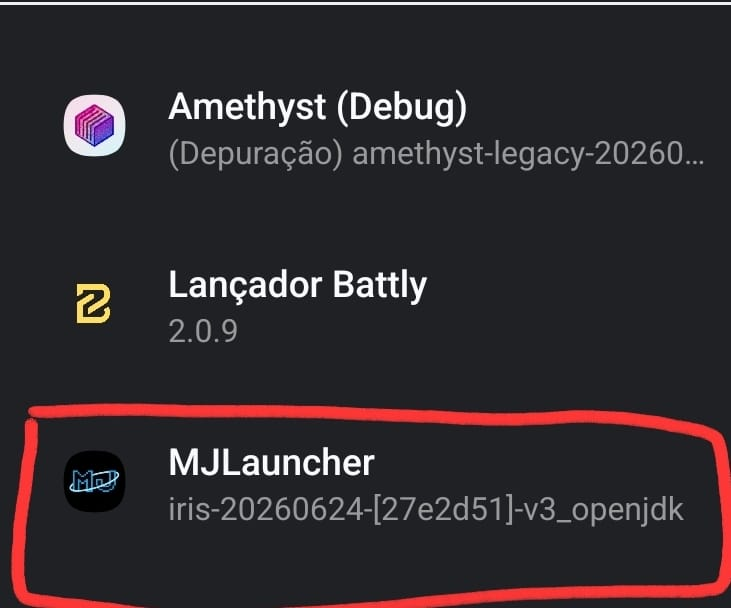
Procure a pasta instances
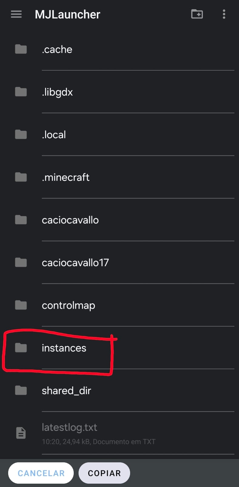
Procure a pasta com o nome do loader e versão (fabric-loader-0.19.3...)
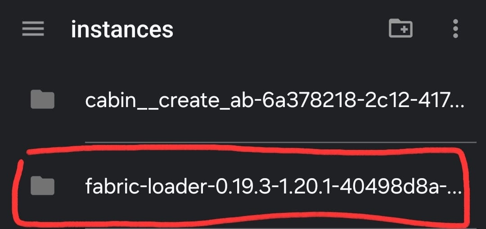
Procure a pasta mods e cole todos os mods lá dentro
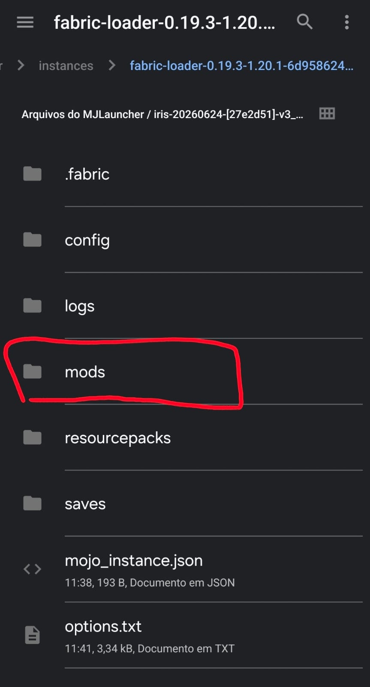
Volte ao menu inicial e basta clicar em jogar!